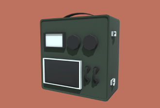

ソビエト風車椅子
ソビエトデザインを意識した電動車いすの3Dモデルです。
2021/9/5
ベネラ
VRChat向けアバターとして制作したソビエト風ロボットの3Dモデルです。
2021/8/3
ローポリラジオデバイス
ゲーム向けのラジオの3Dモデルです。
2021/1/17
Lisa
ソビエトと宇宙をテーマにしたアバター用キャラクターモデルです。
個人用につき配布販売なし
2018/12/18
NK-33 ロケットエンジン
ソビエト連邦が開発したロケットエンジン「NK-33」の3Dモデルです。
販売中です。
2020/12/19
ルノホート Lunokhod
ソビエト連邦の開発した月面探査機の3Dモデルです。
販売中です。
2020/4/28
P-90 第二試作機
FNハースタル社の開発したP-90の第二試作機です。
2018/5/05
IBM7330MTU

IBM社において開発された磁気記録ユニットのモデルです。
2018/2/22
徳川軍弾薬箱

かつて日本を統一し天下を治めていた徳川幕府が
何かの手違いで20世紀まで存在していたら…
という世界の幕府軍が用いる弾薬箱のモデルです。
現代の弾薬箱と江戸時代の長持をモチーフにしました。
2017/9/1
Hs293

ドイツが開発した世界初のロケット動力を用いた空対艦ミサイルです。
A型とD型を切り替えるモーフを設けました。
10分の1モデルも付属します。
2017/8/23
奮龍二型
日本海軍がB-29に対抗する兵器として開発していた地対空ミサイルです。
10分の1モデルも付属します。
2017/8/11
N-1L3
ソビエト連邦がかつてアポロ計画に対抗して打ち上げた
月面着陸用ロケット「N1/L3」です。
2017/8/8
ムスダン 火星10号
某国より飛来する飛翔体のMMDモデルです。
モーフでフィンが動きます。
2017/3/25
どこでもLANソケット
都合のいい場所にLANを配置したい時に使う
差し込み口のMMDモデルです。
黒物オブジェクトにも浮かないブラック仕様も用意しました。
2017/3/25
どこでもUSB

都合のいい場所にUSBを配置したい時に使う
差し込み口のMMDモデルです。
黒物オブジェクトにも浮かないブラック仕様も用意しました。
2017/3/25
どこでもコンセント
都合のいい場所にコンセントを配置したい時に使う
差し込み口のMMDモデルです。
2017/3/1
スプートニク1号
1957年10月4日モスクワ時間22時28分にソビエト連邦が打ち上げた、
世界初の人工衛星「スプートニク1号」のMMDモデルです。
2016/10/4